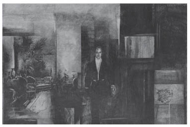

II
İvan İlyiç’in sona eren yaşamının öyküsü yalın ve olağan olduğu kadar korkunçtu da. Tam kırk beş yaşında, yargıçlar kurulu üyesi olarak dünyaya gözlerini yummuştu.
İvan İlyiç, Petersburg’da çeşitli daire ve bakanlıklarda görev yapmış olan bir memurun oğluydu. Babasının meslek yaşamı, önemli bir işi yürütemeyecekleri açıkça belli olduğu halde, uzun hizmet yılları ve eriştikleri mevki dolayısıyla memurluktan atılamayan, bu nedenle de uydurma makamlara getirilerek, onları çok uzun süren yaşlılıklarının son ânına kadar yaşatacak hiç de uyduruk olmayan beş altı bin rublelik ücretler alan insanların meslek yaşamının bir benzeri olmuştu.
Üçüncü dereceden memur baba İlya Yefimoviç Golovin ayrıca bir sürü gereksiz kuruluşun gereksiz bir üyesiydi.
İlya Yefimoviç’in üç oğlu vardı, İvan İlyiç ailenin ikinci oğluydu. En büyükleri başka bir bakanlıkta çalıştığı halde meslek yaşamı babasınınkinin aynısı olmuş, ücretlerin kendiliğinden yükseldiği bir barem derecesine iyice yaklaşmıştı. Üçüncü oğlu beceriksizin biriydi. Girdiği bütün işlerde bir terslikle karşılaşmış, şimdilerde de demiryolu işletmesine geçmişti. Gerek babası, gerekse ağabeyleri, en çok da ağabeylerinin karıları üçüncü oğlandan nefret etmekle kalmıyor, pek zorunlu olmadıkça onun adını dahi anmaktan kaçınıyorlardı. Ailenin tek kızı ise, babaları gibi başkentte bakanlık memuru olan Baron Gref’le evliydi.
İvan İlyiç için le phénix de la famille3 derlerdi. Ne ağabeyi gibi titiz ve soğuk ne de küçük kardeşi gibi aklı bir karış havadaydı. Onların ortası bir şey; zeki, afacan, cana yakın, terbiyeliydi. Küçük kardeşiyle birlikte Hukuk Okulu’na girmişler; kardeşi beşinci sınıftan kovulduğu halde, o, okulu başarıyla bitirmişti. Hukuk Okulu’nda nasıl bir çocuksa, yaşamı boyunca da öyle kalmıştı: yetenekli, şen, sıcakkanlı, girişken, görevi saydığı şeyi sonuna kadar götüren bir adam... Onun görev olarak gördüğü şey, üstlerinin görev saydıklarının aynısıydı. Ne çocukken ne de sonraları başkalarına yaltaklanan biri olmuştu; ama küçüklüğünden beri, ışığa yönelen sinekler gibi, kendisinden yüksektekilerin çekimine kapılarak onların tavırlarını takınmış, yaşam görüşlerini benimsemiş, onlarla yakın ilişkiler kurmuştu. Çocukluk ve gençliğin bütün heyecanları onda derin izler bırakmadan uçup gitmiş, sonunda olgun, onuruna düşkün bir delikanlı olmuştu. Okulda ancak son sınıfa doğru, sezgisiyle doğruluğuna inandığı liberal görüşleri benimsemişti.
Hukuk Okulu’ndayken giriştiği birtakım eylemleri zaman zaman beğenmez, bunları yaparken kendisinden tiksindiği bile olurdu. Ama sonraları, aynı eylemlerin büyüklerince de yapılıp üstelik kötü gözle görülmediğini anlayınca, kendisi bunlara iyi gözle bakmamışsa bile, hepsini kolaycacık unutmuş, bir daha hiçbirini aklına getirip üzülmemişti.
Hukuk Okulu’nu baremin ilk derecesinde bir memur olarak bitirdikten sonra babasından para isteyerek terzi Charmer’e resmi bir elbise diktirdi, respice finem4 yazılı bir madalyonu zincirle kemerine taktı, öğretmenlerine veda edip arkadaşlarıyla pahalı Donon lokantasında güzel bir yemek yedi.
İvan İlyiç, Hukuk Okulu’nda olduğu gibi, görev yaptığı yerlerde de kolayca işlerini düzene koydu. Bir yandan mesleğinde ilerlerken, bir yandan da gününü gün ediyordu. Arada bir, görevinin gereği olarak ilçe merkezlerine gidiyor, hem üstleri hem de astlarıyla iyi geçiniyor, özellikle Raskolnik’lerle5 ilgili davalara övülmeye değer bir dürüstlük ve titizlikle bakıyordu.
Genç oluşuna, keyif düşkünlüğüne karşın göreviyle ilgili konularda çok ağırbaşlı, ciddi, hatta sertti. Toplumsal ilişkilerinde ise şen şakrak, nükteci, terbiyeli, hoş görülü –evlerine aileden biriymiş gibi girip çıktığı amiriyle karısının söyledikleri gibi– bon enfant’dı.6
Bir taşra ilinde ona askıntı olan bir kadınla, sonra da bir kadın terzisiyle gönül ilişkisi oldu. Oradaki askeri birliğe atanan hassa subaylarıyla içki âlemlerine katıldı, yemeklerden sonra randevu evlerinin bulunduğu uzak bir sokağa gittiler. Amirine yaranmak, æhatta karısının gözüne girmek için özel çaba harcadığı zamanlar oldu, ama bu davranışlara, toplumun kabul ettiği kurallara uygunluğu dolayısıyla kötü gözle bakılamazdı, olsa olsa Fransızca şu özdeyişin kapsamına girebilirdi: il faut que jeunesse se passe.7 Bütün bunlar tertemiz ellerle, temiz gömlekler giyilmiş olarak, Fransızca konuşularak, en önemlisi de seçkin bir topluluk içinde geçmekteydi. Seçkin bir topluluk içinde geçmesi sebebiyle de yüksek memurlarca hoş karşılanıyordu.
İvan İlyiç böylece beş yıl hizmet etti, daha sonra görevinde bir değişiklik oldu. Yeni hukuk kuruluşları ortaya çıkmış, yeni yeni insanlara gereksinim duyulmuştu.
İşte İvan İlyiç bu yeni insanlardan biriydi.
İvan İlyiç’e sorgu yargıçlığı görevi önerilmiş, bu görevin başka bir ilde olmasına karşın, kurulu düzenini bozup yeni bir düzen kurmak pahasına da olsa bunu kabul etmişti. Dostları onu yolcu etmeden önce, hep birlikte satın aldıkları gümüş bir sigaralık armağan ettiler ona, İvan İlyiç böylece yeni görev yerine uğurlandı.
İvan İlyiç özel işler memurluğunda olduğu gibi, sorgu yargıçlığında da ne istediğini bilerek, görevini özel yaşantısından ayırarak, kendini herkese saydırıp herkese de saygı göstererek çalışıyordu. Yeni görevi eskisinden çok daha ilginçti onun için. Eski görevinde, müdürün kapısında korkudan titreyerek bekleşen dilek sahiplerinin ve küçük memurların imrenen bakışları arasında, sırtında Charmer’in diktiği şık giysi, elini kolunu sallayarak içeri girmesi, müdürle karşı karşıya oturup çayını içerken sigarasını tüttürmesi çok hoş kaçıyordu. Ama o zaman emrinin altında böylesine çok insan yoktu. Ancak görev için ilçelere gittiği zamanlarda, emniyet amiriyle anlaşmazlığa düşenler ona son derece saygılı davranıyorlardı. İvan İlyiç, emrinin altındaki bu birkaç kişiye nazik, hemen hemen arkadaşça davranır, onlardan daha güçlü olduğu halde, astlarına dostça, senli benli duygular taşıdığını hissettirmek isterdi. Ama böyle davranabileceği kişilerin sayısı kaç taneydi ki?
Sorgu yargıcı olduğu zaman en forslu, en burnu havada kişileri avucunun içine aldığını; antetli kâğıtlara yazacağı birkaç satır yazıyla bu forslu, burnu havada kişileri karşısına sanık ya da tanık olarak getirebileceğini, oturmalarını söylemediği sürece sorularına karşısında dikilerek yanıt verdireceğini biliyordu. Ama o, yetkisini kötüye kullanmıyor, tam tersine davranışlarını yumuşatmaya çalışıyordu. Yeni görevinin bütün çekiciliği de, gücünün ayırdına varmasıyla birlikte, bunun etkisini yumuşatabilme olanağıydı.
Görevini yürütürken, özellikle soruşturmalarda, konuyla ilgili olmayan ayrıntılardan kaçınmasını biliyor; konu ne denli karmaşık olursa olsun, kendi kişisel görüşünden hiç söz etmeden, davanın kâğıt üzerinde yalnız dış hatlarıyla belirmesini, en önemlisi de bütün ayrıntılara uyulmasını sağlıyordu. Bu tarz çalışma başkalarınca bilinmiyordu. Ayrıca, 1864 yasalarının uygulamasına ilk geçenlerden biri de İvan İlyiç olmuştu.
İvan İlyiç sorgu yargıcı olarak yeni bir ile atandığında yeni dostluklar, ilişkiler kurdu; onların havasına uyarak kendisini yeni bir kişi olarak kabul ettirdi. İl yöneticileriyle arasında epeyce bir mesafe bıraktıktan sonra adliye personelinden ve kentte yaşayan zengin soylular takımından iyi bir arkadaş çevresi edindi. Bu arada hükümetten pek memnun değilmiş gibi tavırlar takınarak, ılımlı bir liberalliği ve Batılılaşma görüşünü benimsedi. Ayrıca giyim kuşamının inceliğinden bir şey yitirmeden, sakalının biçimsizce uzamasına göz yumdu.
Yeni kentteki yaşantısı da iyice düzene girmişti. Valiye cephe alan memurlar topluluğu birbirine bağlıydı; aylığı da artmıştı. Burada oynamaya başladığı vint oyunu da yaşantısına ayrı bir tat katıyordu. İvan İlyiç’in bir an neşesini yitirmeden, uzağı görerek vint oynayabilmesi, çoğu zaman oyunu onun kazanmasını sağlıyordu.
Yeni kentteki görevinin ikinci yılında ileride karısı olacak bir genç kızla tanıştı. Praskovya Fyodorovna Mihel, İvan İlyiç’in bulunduğu topluluktaki kızların en zekisi, en çekicisi, en göz alıcısıydı. Öteki eğlenceleri ve görev yorgunluklarından sonraki dinlenmeleri dışında, İvan İlyiç, Praskovya Fyodorovna ile hoşça vakit geçiriyor, sıkılmadan karşılıklı eğleniyorlardı.
Özel işler memuruyken danslara katılırdı, ama sorgu yargıçlığına başladıktan sonra dansa arada bir kalkar oldu. “Her zaman dansa kalkmam, hem pek dikkat de etmem, ama iş iddiaya bindi mi, herkesten daha güzel dans etmesini bilirim,” demeye getirirdi. Praskovya Fyodorovna’yla da seyrek olarak, toplantıların sonuna doğru dans ediyordu; işte daha çok bu danslar dolayısıyladır ki genç kızın gönlünü kazanmayı bildi.
İvan İlyiç’in kafasında açık olarak belirmiş bir evlenme tasarısı yoktu, ama genç kız kendisine âşık olunca evliliği ciddi olarak düşünmeye başladı. Kendi kendine, “Sahiden, evlensem nasıl olur?” diye sordu.
Praskovya Fyodorovna soylu bir ailenin, güzel, fazla drahoması bulunmayan bir kızıydı. İvan İlyiç kendisine daha iyi bir eş seçebilirdi, ama bu da iyi sayılırdı. Kendi aylığı vardı, evleneceği kızdan da bir o kadar drahoma umuyordu. Üstelik Praskovya Fyodorovna ona uygun bir aileden gelen, cana yakın, hoş, çok da aklı başında bir kızdı. İvan İlyiç’in, Praskovya Fyodorovna’ya âşık olduğu ya da onunla iyi anlaştığı için evlendiğini söylemek ne kadar yanlış olursa, onunla sırf çevresinin böyle bir birleşmeyi uygun bulduğu için evlendiğini söylemek de o kadar haksızlık olur. İvan İlyiç kararını kendi düşüncelerine göre verdi. Hem iyi bir kızla evlilik bağı kuracak hem de böylece büyüklerinin isteklerini yerine getirecekti.
Düşündüğü gibi de yaptı.
Düğün hazırlıklarından başlayıp karısının gebeliğine kadar karşılıklı sevgi, yeni mobilyalar, yeni kap kacak, yeni çamaşırlar arasında geçen cicim ayları İvan İlyiç’in o kadar hoşuna gitti ki, o zamana değin içinde bulunduğu ve kendi yaradılışına özgü yaşantısının başkalarınca da uygun karşılanan ağırbaşlı, sıkıntısız, hoş, eğlenceli havasının evlilikle bozulmak şöyle dursun, daha da canlanacağını düşünmeye başladı. Ama karısının gebeliğinin ilk aylarından sonra, hiç beklemediği ve bir türlü yakasını kurtaramadığı, yepyeni, umulmadık, edep kurallarına aykırı, dayanılması zor olaylarla karşılaşmaya başladı.
Karısı, ortada fol yok yumurta yokken, kendi deyimiyle de gaité de cœur8 yaşamının tadını kaçırıyordu. Praskovya Fyodorovna durup dururken onu kıskanıyor, ondan kendisine fazlasıyla ilgi göstermesini istiyor, sağa sola çatıyor, hoş olmayan, kaba bazı davranışlarda bulunuyordu.

Düğün hazırlıklarından başlayıp karısının gebeliğine
kadar karşılıklı sevgi, yeni mobilyalar, yeni kap kacak,
yeni çamaşırlar arasında geçen cicim ayları İvan İlyiç’in
o kadar hoşuna gitti ki...
İvan İlyiç önce, yaşam karşısındaki her zamanki becerikli, nazik tavrıyla, bu can sıkıcı durumdan kurtulmaya çalıştı. Böyle davranmakla şimdiye dek burnu bile kanamamıştı. Karısının suratsızlığını görmezlikten gelerek evine arkadaşlarını çağırıp vint partileri düzenliyor; arada bir de kulübe ya da arkadaşlarının evlerine gidiyordu. Böylece eski, kolay, eğlenceli yaşantısını sürdürüyor denebilirdi.
Ama bir gün karısı açtı ağzını yumdu gözünü, ona söylemediğini bırakmadı; sonra da istediklerini her yaptıramayışında kocasını aynı biçimde azarlamaya başladı.
Karısının dediklerini yapmadığı, yani onunla birlikte evde oturup çile doldurmadığı sürece, bu hırgüre son vermeyeceğini anlayan İvan İlyiç’in içine bir korku düştü. Evlilik yaşamının, en azından karısıyla geçecek günlerin, her zaman eğlenceli, huzur dolu olamayacağını, tersine, huzurunu kaçıracağını görerek bu tatsız durumu savuşturmak için kurtuluş yolları aramaya başladı. Görevinin Praskovya Fyodorovna üzerinde olumlu bir etkisi bulunduğunu biliyordu; işte bu yoldan, göreviyle ilgili yükümlülüklerini ileri sürerek karısına karşı savaşmaya, böylece bağımsızlığını korumaya karar verdi.
Çocuklarının doğumundan sonra ortaya çıkan rahat geçinme sorunlarıyla ilgili başarısız denemeler, anne ile bebeğin hem gerçek, hem uyduruk hastalıkları, bu gibi durumlarda kendisinden ilgi beklenen, ama böyle şeylerden fazla anlamayan İvan İlyiç’e bağımsız yaşantısını koruması bakımından büyük engeller çıkarıyordu.
Huysuzlukları artıp karısı daha çok sinirlendikçe, o da, hayatının ağırlık merkezini işine kaydırmaya başladı. Eskisine göre işinin üzerine daha çok düşüyor, yükselme hırsı yıllar geçtikçe artıyordu.
Evlenmesinin üzerinden bir yıl bile geçmemişti ki, evlilik yaşantısının bazı elverişli olanakları yanında, aslında dayanılması güç, içinden çıkılmaz bir şey olduğunu anladı. Üzerine düşen borcu ödemesi, yani toplumun hoş göreceği edepli bir yaşam sürmek için, göreviyle olduğu kadar eviyle de düzgün ilişkiler kurması gerektiği kafasına dank etti.
Sonunda bu ilişkileri kurdu. Onun evden bütün istediği, karısının ona verebildiği kadarı, yani ev yemekleri, ev kadınlığı ve yatak arkadaşlığıydı.
En çok da, görünüşte bile olsa, toplumun sınırlarını çizdiği edepli bir davranış bekliyordu karısından. Bunların dışında, ölçülü hareket etmesinden, onunla hoşça vakit geçirmekten başka ondan beklediği ne olabilirdi ki! Bunları bulursa haline şükrediyor; bulamayıp da sertlikle ve azarla karşılaşırsa, görevinin çevresinde kurduğu kalın duvarlı dünyasına çekilerek orada huzur buluyordu.
Aynı kentte yedi yıl kadar kaldıktan sonra İvan İlyiç’i başka bir il merkezine savcı olarak atadılar. Yeni evlerine taşındılar, paraları yetersizdi, bu yüzden yeni evleri Praskovya Fyodorovna’nın hoşuna gitmedi. Aylıkları eskisine göre biraz artmıştı, gel gelelim yaşam pahalıydı, üstelik çocuklardan ikisinin ölümü, aile içinde geçirdiği tedirgin günler İvan İlyiç’i dayanılması zor bir duruma soktu.
Çalışkan bir memur olduğu için herkes İvan İlyiç’i beğeniyordu, bu yüzden üç yıl sonra onu başsavcı yardımcısı yaptılar. Yeni görevleri, bu görevlerin toplumun gözündeki önemi, istediği kişiyi mahkemeye çağırıp hapse atabilme olanağı, kalabalık önünde rahat konuşması ve görevini yürütmedeki büyük başarısı onu işine daha çok bağlıyordu.
Birbiri üstüne çocukları oldu. Praskovya Fyodorovna’nın sinirliliği, hırçınlığı arttıkça artıyor, ama İvan İlyiç’in, ailesiyle olan ölçülü ilişkileri onu karısının hırçınlığından koruyordu.
Praskovya Fyodorovna yeni görev yerlerinde başlarına gelen bütün felaketlerde kocasını suçlu buluyordu. Karıkoca arasında geçen günlük konuşmalar, özellikle çocukların öğrenimi konusu, dönüp dolaşıp asıl tartışma nedeni olan sorunlara gelip dayanıyordu. Zaten tartışmalar, alevlenmek için fırsat kollamaktaydı; tek mutlu zamanları, seyrek olarak gelip kısa zamanda sönen karşılıklı sevgi patlamalarıydı. Bu dönemler, gizli düşmanlık denizinde bir an için karaya çıkıp sonra yeniden açılarak birbirlerinden daha çok uzaklaştıkları ufacık adalar gibiydi. Karısından uzaklaşmasının tuhaf bir durum olmayıp, tam tersine, ailesine karşı tavrının asıl dayanağı olduğunu kabul eden İvan İlyiç’in hiçbir şeye canı sıkılmamaya başladı. Bu durumun gerçekliğini kabul etmese, üzüntüden kendini yerdi herhalde. Bütün amacı, kendisini aile kavgalarından uzak tutup bunları her ailede görülebilecek türden, zararsız bir biçime büründürmek değil miydi? Evinde geçirdiği süreyi günden güne kısaltarak, evde bulunmasını da başkalarının geldiği bir zamana denk getirerek amacına ulaşıyordu.
Artık onun için en önemli şey göreviydi. Yaşamının bütün özünü çalışmaya adamıştı. Bu sayede her şeyi unutuyordu. Görevindeki gücünü anlamış olması, mahvetmek istediğini mahvedebilme olanağı, mahkemeye girerken, astlarıyla konuşurken takındığı tavır, gerek büyüklerinin gerekse küçüklerinin karşısında kazandığı başarı, davayı yürütmedeki ustalığı onu son derece sevindiriyor; akşamları arkadaş toplantılarıyla, topluca yemeklerle, vint partileriyle günlük yaşamını dolduruyordu. Yaşantısı böylece, kendi istediği gibi, edep kurallarına uygun, hoş biçimde sürüp gitmekteydi.
Yedi yıl daha böylece geçip geçti. Büyük kızı on altı yaşına girdi. Bir çocukları daha ölünce, hep sorun yaratan kolejli oğlanla birlikte iki çocukları kaldı. İvan İlyiç, oğlanı Hukuk Okulu’na vermek istemiş, Praskovya Fyodorovna ise, tersine, koleje göndermişti. Kız evde özel dersler alarak iyi yetişmişti, oğlan ise iyi okuyor sayılırdı.